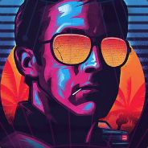

Luka Martina

Cosas sobre mi:
Me gustan mucho los videojuegos competitivos, los autos, las motos, la adrenalina y las computadoras.
Si tuviera que hacer una lista de mis motos favoritas, sería algo asi:
- Kawasaki ninja H2R
- KTM Superduke 890
- Yamaha mt-09
- BMW s1000rr
- Yamaha R6
Si tuviera que hacer una lista de mis autos favoritos, sería asi:
- Toyota supra mk4
- Bugatti veyron super sport
- Nissan skyline r32
- Buick GNX
- Mclaren 765lt
Me encantan los juegos competitivos, en especial el Rainbow Six Siege.
Es un shooter realista multijugador en primera persona.
Mi sueño es llegar a ser un jugador profesional de este juego
Para este juego utilizo mi pc, que cuenta con las siguientes especificaciones:
- Ryzen 5 1600af
- RX 5600xt
- 16 GB ddr4 3000Mhz
- ssd m.2 500gb
- GA-AB350M-DS3H V2
- id cooling se 214
- Kolink Citadel 3
A continuacion los perifericos que utilizo (por si a alguien le interesa).
- Monitor: Benq Zowie XL2546K
- Mouse: Glorious Model o-
- Mousepad: Razer strider
- 2°Mousepad VSG armagedon XXL
- Bungee: VSG Bungee Black
- Teclado: Ducky ONE 2 Mecha Mini
- Headsets: HyperX Cloud II Gunmetal edition
- 2°Teclado: Nisuta 60%
- 2°Mouse: VSG Aquila Fly
- 3°Mouse: Logitech G pro
- 3°Mousepad: Logitech G640 Cloud9 Edition
- 2°Monitor: Sentey MS2401
- Silla: Hikari GM20 White
Tengo un certificado en:
Capacitación en Diagnóstico y Mantenimiento de PC
Informatic Training Center | 2019
Trayectoria en eSports:
Capitán del equipo ganador en University Esports
Argentina
Disciplina Rainbow Six: Siege
Marzo 2021-Julio 2021
Capitán del equipo semifinalista en University Esports
Argentina
Disciplina Rainbow Six: Siege
Agosto 2021-Noviembre 2021
Contacto:
Mi instagram Instagram
Mi github Github
Mi Discord: kidLuka#0890